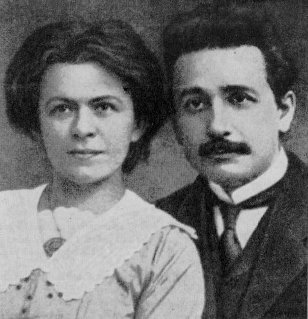
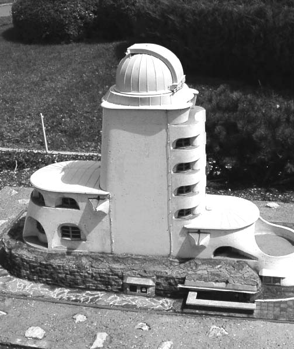

李醒民
（中国科学院研究生院， 北京 100049）
2005年是爱因斯坦创立狭义相对论100周年和逝世50周年。联合国大会把2005年定为“国际物理年”，德国、瑞士等国家也把2005年定为“爱因斯坦年”，以表达对爱因斯坦的纪念。
阿尔伯特·爱因斯坦（Albert Einstein, 1879-1955）是20世纪最伟大的科学家、思想家和人。作为科学家，他是19和20世纪之交物理学革命的发动者和主将，是现代科学的奠基者和缔造者。他的诸多科学贡献都是开创性的和划时代的。按照现今的诺贝尔科学奖评选标准，他至少应该荣获五六次物理学奖（狭义相对论、布朗运动理论、光量子理论、质能关系式、广义相对论，以及固体比热的量子理论、受激辐射理论、玻色-爱因斯坦统计、宇宙学等）。爱因斯坦在物理学家心目中的威望和位置遥遥领先。据说，1999年12月，《物理学世界》（Physics World）杂志在世界第一流物理学家中间做了一次民意测验，询问在物理学中作出最重要贡献的五位物理学家的名字。在收到的表格上，共有61位物理学家被提及。爱因斯坦以119票高居榜首，牛顿紧随其后得96票。麦克斯韦（67）、玻尔（47）、海森伯（30）、伽利略（27）、费因曼（23）、狄拉克（22）和薛定谔（22）出现在前10名中。130位调查对象只有一人提名斯蒂芬·霍金——要知道，他可是当今全球知名度最高的科学家啊。
作为思想家，爱因斯坦的以开放的世界主义、战斗的和平主义、自由的民主主义、人道的社会主义为标志的社会政治哲学，以及远见卓识的科学观、别具只眼的教育观、独树一帜的宗教观，无一不是人类宝贵的思想遗产，它们将会成为21世纪“和平与发展”主旋律中的美妙音符，永远充当社会进步和文明昌盛的助推器。他的科学哲学是由五种要素——温和经验论、基础约定论、意义整体论、科学理性论、纲领实在论——构成的独特而绝妙的多元张力哲学。在这个兼容并蓄、和谐共存的哲学统一体中，这些不同的乃至异质的要素相互限定、珠联璧合，彼此砥砺、相得益彰，保持着恰如其分的“必要的张力”，从而显得磊落轶荡、气象万千。他的探索性的演绎法、逻辑简单性原则、准美学方法、形象思维等科学方法论别出机杼，所向披靡。他关于科学的客观性、可知性、统一性、和谐性、因果性、简单性、不变性等的科学思想涵义深邃，意蕴隽永。它们是19和20 世纪之交科学哲学和科学方法论的巅峰——以马赫、庞加莱、迪昂、奥斯特瓦尔德、皮尔逊为代表的批判学派——之集大成和发扬光大，是现代哲学的思想奇葩和智慧结晶，从而在在哲学史和思想史上浓墨重彩地大书一笔，成为世人取之不尽、用之不竭的精神宝藏。
爱因斯坦作为一个大写的人，他对生命的价值和人生意义的理解，他对真善美的不懈追求，他的独立的人格、仁爱的人性和高洁的人品，这一切形成了他的丰盈的人生哲学和道德实践，成为人类高山景行的楷模和人的自我完善的强大的精神力量。在某种意义上，作为人的爱因斯坦比作为科学家和思想家的爱因斯坦还要伟大。当他活着的时候，全世界善良的人似乎都能听到他的心脏在跳动；当他去世时，人们不仅感到这是世界的巨大损失，而且也是个人的不可弥补的损失。这样的感觉和情愫是罕有的，一个自然科学家的生与死能在世人中间引起这样的感觉，也许在历史上还是头一次。
说到此处，我蓦然想起宋人钱惟演的《对竹思鹤》。钱诗云：“瘦玉萧萧伊水头，风宜清夜露宜秋。更教仙骥旁边立，尽是人间第一流。”以此诗之意象隐喻爱因斯坦，岂不是神来之笔，惟妙惟肖！
今年是爱因斯坦创立狭义相对论（写于1905年6月，发表于同年9月）100周年和逝世（1955年4月18日）50周年，联合国不失时机地把2005年定为“国际物理年”，德国、瑞士等国家也把2005年定为“爱因斯坦年”，以表达对爱因斯坦的纪念。为纪念这位百年或千年难得一遇的世界伟人，北京大学出版社适逢其会地出版爱因斯坦的著作《狭义与广义相对论浅说》等，这既表达了对爱因斯坦的缅怀之心和铭感之情，更表明了继承和发扬他的思想遗产和精神菁华之意。
一、 爱因斯坦的“幸运年”
1905年，是爱因斯坦的“幸运年”。是年，晴空响霹雳，平地一声雷——爱因斯坦在德国《物理学杂志》17卷发表了著名的“三合一”论文，当时他还是瑞士伯尔尼专利局的一个默默无闻的小职员。
第一篇论文是《关于光的产生和转化的一个启发性的观点》，即光量子论文，写于1905年3月。爱因斯坦在其中大胆提出光量子假设：从点光源发出来的光束的能量在传播中不是分布在越来越大的空间中，而是由个数有限的、局限在空间各点的能量子所组成，这些能量子能够运动，但不能再分割，只能整个地吸收或产生出来。从这一假设出发，他讨论和阐释了包括光电效应在内的9个具体问题。这篇论文的确是“非常革命的”，它使沉寂了4年之久的普朗克的辐射量子论得以复活，并拓展到光现象的研究之中。它直接导致了1924年德布罗意物质波的概念和1926年薛定谔波动力学的诞生。
第二篇论文是《热的分子运动论所要求的静液体中悬浮粒子的运动》，即布朗运动论文，写于1905年5月。该论文指出古典热力学对于可用显微镜加以区分的空间不再严格有效，并提出测定原子实际大小的新方法。这直接导致佩兰1908年的实验验证，从而给世纪之交关于原子实在性的旷日持久的论争最终画上句号。
第三篇论文是《论动体的电动力学》，即狭义相对论论文，写于1905年6月。这篇论文并非起源于迈克耳孙-莫雷实验。它由麦克斯韦电动力学应用到运动物体上要引起似乎不是现象所固有的不对称作为文章的开篇，通过引入狭义相对性原理和光速不变原理两个公理以及同时性的定义，从而推导出长度和时间的相对性及其变换式，一举说明了诸多现象。
紧接着在同年9月，爱因斯坦又完成了《物体的惯性同它所含的能量有关吗？》。这篇不足3页的论文，通过演绎，轻而易举地导出了质能关系式E =mc 2 ，得出“物体的质量是它所含能量的量度”的结论，从而叩开了原子时代的大门。
狭义相对论的提出是物理学中划时代的事件。它使力学和电动力学相互协调，变革了传统的时间和空间概念，揭示了质量和能量的统一，把动量守恒定律和能量守恒定律联结起来。它与10年之后创立的广义相对论，在科学史上矗立了一座巍峨而永恒的丰碑，全面打开了物理学革命的新局面。海森伯曾经说过：“在科学史上，以往也许从来没有过一个先驱者像阿尔伯特·爱因斯坦和他的相对论那样，在他在世时为那么多的人所知道，而他一生的工作却只有那么少的人能够懂得。然而，这个名声是完全有理由的。因为有点像艺术领域中的达·芬奇或者贝多芬，爱因斯坦也站在科学的一个转折点上，而他的著作率先表达出了这一变化的开端，因此，看来好像是他本人发动了我们在本世纪上半期所亲眼目睹的这场革命。”
爱因斯坦的“三合一”论文是在8周内一气呵成的。当时他只是瑞士伯尔尼专利局一名默默无闻的小职员。奇迹是怎样发生的呢？
“问渠那得清如许，为有源头活水来。”
在叙述爱因斯坦创立狭义相对论之前，我们先回顾一下当时的科学背景以及先驱者们的工作，尤其是洛伦兹和庞加莱的贡献。
二、 19世纪末的物理学状况
从19世纪初光的波动说复活以来，物理学家一直对传光媒质以太议论不休，其中一个重要问题就是以太和可称量物质（特别是地球）的关系问题。
当时，有两种针锋相对的观点。菲涅耳在1818年认为，地球是由极为多孔的物质组成的，以太在其中运动几乎不受什么阻碍。地球表面的空气由于其折射率近于1，因而不能或者只能极其微弱地曳引以太，可以把地球表面的以太看作是静止的。
斯托克斯认为菲涅耳的理论建立在一切物体对以太都是透明的基础之上，因而是不能容许的。他于1845年提出，在地球表面，以太与地球有相同的速度，即地球完全曳引以太。只有在离开地球表面某一高度的地方，才可以认为以太是静止的。由于菲涅耳的静止以太说能圆满地解释光行差现象（由于地球公转，恒星的表观位置在一年内会发生变化），因而人们普遍赞同它。
假使静止以太说是正确的，那么由于地球公转速度是每秒30千米，在地球表面理应存在“以太风”。多年来，人们做了一系列的光学和电学实验（即所谓的“以太漂移”实验），企图度量地球通过以太的相对运动。但是，由于实验精度的限制，只能度量地球公转速度和光速之比的一阶量，这些一阶实验一律给出否定的结果。
随着麦克斯韦电磁理论的发展，人们了解到，与地球公转速度和光速之比的平方有关的效应，应该能在光学和电学实验中检测到。因为麦克斯韦理论隐含着，光、电现象有一个优越的参照系，这就是以太在其中静止的参照系，以太漂移的二阶效应理应存在。但是这个实验精度要求太高，一时还难以实现。
其实，麦克斯韦早在1867年就指出，在地球上做测量光速的实验时，因为光在同一路径往返，地球运动对以太的影响仅仅表现在二阶效应上。1879年，麦克斯韦在致美国航海历书事务所的信中就提出了度量太阳系相对以太运动速度的计划，当时在事务所工作的迈克耳孙采纳了这一建议。
1881年，迈克耳孙正在德国柏林亥姆霍兹手下留学。由于在柏林无法完成实验，迈克耳孙把别人为他建造的整个装置运到波茨坦天体物理观测站进行实验。他所期望的位移是干涉条纹的0.1，但实际测得的位移仅仅是0.004～0.005，这只不过相当于实验的误差而己。
显然，否定结果（也称“零结果”）表明，企图检测的以太流是不存在的。迈克耳孙面对事实不得不认为：“静止以太的假设被证明是不正确的，并且可以得到一个必然的结论：该假设是错误的”，“这个结论与迄今被普遍接受的光行差现象的解释直接矛盾”，“它不能不与斯托克斯1846年在《哲学杂志》发表的论文附加摘要相一致”。
不过，这次实验的精度还不够高，数据计算也有错误。1881年冬，巴黎的波蒂埃指出了计算中的错误（估计的效果比实际大了两倍），洛伦兹在1884年也指出了这些问题。因此，无论迈克耳孙还是其他人，都没有把这次实验看做是决定性的。迈克耳孙本人此后也将兴趣转移到了精密测定光速值上，对1881年的实验进行改良的工作就这样搁置下去了。
1884年秋，威廉·汤姆孙访问美国，他在巴尔的摩作了多次讲演。到会听讲的迈克耳孙有机会会见了与汤姆孙一起访美的瑞利勋爵，他们就1881年的实验交换了意见。与此同时，瑞利也转达了洛伦兹的意见。瑞利的劝告给迈克耳孙以极大的勇气，他进一步改进了干涉仪，和著名的化学教授莫雷一起，于1887年7月在克利夫兰重新进行了实验，此时的迈克耳孙已是克利夫兰城凯思应用科学院的教授了。
为了维持稳定，减小振动的影响，迈克耳孙和莫雷把干涉仪安装在很重的石板上，并使石板悬浮在水银液面上，可以平稳地绕中心支轴转动。为了尽可能增大光路，尽管干涉仪的臂长已达11米，他们还是在石板上安装了多个反射镜，使钠光束来回往返8次。根据计算，这时干涉条纹的移动量应为0.37，但实测值还不到0.01。
迈克耳孙和莫雷认为，如果地球和以太之间有相对运动，那么相对速度可能小于地球公转速度的1/60，肯定小于1/40。他们在实验报告中说：“似乎有理由确信，即使在地球和以太之间存在着相对运动，它必定是很小的，小到足以完全驳倒菲涅耳的光行差解释。”
1887年实验的否定结果让当时的每一个人都迷惑不解，而且在很长一段时间内依然如故。人们并没有认为该实验是判决性的，就连迈克耳孙自己也对结果大失所望。他称自己的实验是一次“失败”，以致放弃了在实验报告中许下的诺言(每五天进行六小时测量，连续重复三个月，以便消除所有的不确定性)，不愿再进行长期的观察，而把干涉仪用于其他实验去了。
迈克耳孙并不认为自己的实验结果有什么重要意义，他觉得实验之所以有意义，是因为设计了一个灵敏的干涉仪，并以此自我安慰。直到晚年，他还亲自对爱因斯坦说，他自己的实验引起了相对论这样一个“怪物”，他实在是有点懊悔的。
洛伦兹对迈克耳孙实验的结果也感到郁郁不乐，他在1892年写给瑞利的信中说：“我现在不知道怎样才能摆脱这个矛盾，不过我仍然相信，如果我们不得不抛弃菲涅耳的理论，……我们就根本不会有一个合适的理论了。”洛伦兹对1887年的实验结果依然疑虑重重：“在迈克耳孙先生的实验中，迄今还会有一些仍被看漏的地方吗？”
瑞利在1892年的一篇论文中认为：“地球表面的以太是绝对的静止呢，还是相对的静止呢？”这个问题依然悬而未决。他觉得迈克耳孙得到的否定结果是“一个真正令人扫兴的事情”，并敦促迈克耳孙再做一次实验。威廉·汤姆孙直到本世纪开头还不甘心实验的否定结果。
顺便说说，迈克耳孙的实验工作和爱因斯坦的相对论在历史上并无什么直接联系。但是在1900年前后，他的“以太漂移”实验对洛伦兹等人的电子论却产生了毋庸置疑的影响。尽管学术界对该实验的历史作用仍有不同的看法，但迈克耳孙本人晚年仍念念不忘“可爱的以太”。直到1927年，他在自己最后一本书中谈到相对论已被人们承认时，仍然对新理论疑虑重重。
迈克耳孙-莫雷实验似乎排除了菲涅耳的静止以太说，而静止以太说不仅为电磁理论所要求，而且也受到光行差现象和斐索实验的支持。为了摆脱这个恼人的困境，斐兹杰拉德和洛伦兹分别在1889年和1892年各自独立地提出了所谓的“收缩假设”。他们认为，由于干涉仪的管在运动方向上缩短了亿分之一倍的线度，这样便补偿了地球通过静止以太时所引起的干涉条纹的位移，从而得到了否定的结果。洛伦兹基于电子论进而认为，这种收缩是真实的动力学效应，对于物质来说具有普遍意义。拉摩也十分赞同这一看法，他证明如果物质由电子组成，这种情况便能够发生。
三、 狭义相对论的先驱：洛伦兹和庞加莱
洛伦兹是于1892年11月在荷兰阿姆斯特丹科学院提出收缩假说的。他是荷兰物理学家，21岁就获得博士学位，精通法、德、英文。他在解释了迈克耳孙实验的否定结果时认为：“初看起来，这个假设似乎不可思议，但我们不能不承认，这绝不是牵强附会的，只要我们假定分子力也像电力和磁力那样通过以太而传递（至于电力和磁力，现在可以明确地作这样的断言），平移很可能影响两个分子或两个原子之间的作用，其方式有点类似于荷电粒子之间的吸引与排斥。既然固体的形状和大小最终取决于分子作用的强度，因此物体大小的变化也就会存在。”
在提出收缩假说后，洛伦兹进一步探讨了以太和地球相对运动对其他电磁现象和光现象的影响问题。1895年，他发表了“运动物体中电磁现象和光现象的理论研究”。在这篇论文中，他不仅进行了个别的讨论，而且证明了普遍保证一阶效应不能显示出来的状态对应定理：“设在静止参照系中存在着以x ，y ，z ，t 为变数表示的电磁状态，那么在具有同样物理构造并以v 运动的参照系中，以相对坐标x′ ，y′ ，z′ 和当地时间t′ 为独立变数的同样的函数所表示的电磁状态也必定存在。”现在看来，这个定理在一次近似下表示了洛伦兹协变性。可是，洛伦兹当时并无此意，当地时间只不过是为了数学上的方便而引入的辅助变数而已。
1895年的理论仅仅是完成了一次近似，用它还不能说明迈克耳孙实验。用收缩假说虽然可使矛盾得以解决，但是该假说和他的理论体系并没有本质的联系。因此，洛伦兹努力提高对应态定理适用范围的阶数，企图使它成为一个严密的定理。庞加莱的中肯批评和后来的两个实验加快了洛伦兹的工作进程。
1900年，庞加莱在巴黎召开的国际物理学会议上作了“实验物理学和数学物理学的关系”的讲演。在这篇讲演中，他特别谈到，洛伦兹理论是现存理论中最使人感到满意的理论，但是也有修正的必要。他认为，假使为了解释迈克耳孙实验的否定结果，需要引入新的假说，那么每当出现新的实验事实时，也同样有这种需要。毫无疑问，对于每一个新的实验结果创立一种特殊假说，这种作法是不自然的。假使能够利用某些基本假定，并且不用忽略这种数量级或那种数量级的量，来证明许多电磁作用都完全与系统的运动无关，那就更好了。其实，庞加莱在1899年的一次讲话中就谈到这种看法。
庞加莱的批评给洛伦兹指出了努力的方向，但促使他最后下决心改善先前理论的是瑞利、布雷斯以及特劳顿和诺布耳的实验。
按照洛伦兹的收缩假说，假使物体在运动方向缩短，那么它的密度就会因方向而异，这样一来，透明体理应显示出双折射现象。瑞利在1902年做了实验，并未发现预期的现象。布雷斯在1904年重复了这个实验，依然得到否定的结果。按照同样的假说，如果使电容器的极板与地球运动方向成一角度，那么当给电容器充电时，应该存在使电容器极板转向地球运动方向的力偶作用。可是在1903年，特劳顿和诺布耳把电容器固定在灵敏的扭秤上，这种扭秤的灵敏度足以测出该数量级的力偶矩，然而他们在实验中却没有观察到任何效应。
洛伦兹面对事实，抱定彻底解决而不是近似解决所有问题的决心，经过重新努力，终于在1904年5月完成了题为“速度小于光速系统中的电磁现象”的论文。洛伦兹1904年的理论是以麦克斯韦方程和作用在电荷上的力（后来称为洛伦兹力）的表达式为基础的，其中麦克斯韦方程在相对于以太固定的参照系(x ，y ，z )中是成立的。他的目的是研究以匀速沿x轴方向运动的物理系统中所发生的电磁现象，以阐明该现象显示不出任何运动效应。他发现，利用原先的方程和表达式在相对以太运动的参照系中处理问题是极为复杂的，为了避免不必要的麻烦，他作为一种数学技巧引入了新的变数——相对坐标和当地时间。在定义了新的电位移矢量和磁场强度矢量后，他又假定了电荷密度和速度之间的变换式。他把新变数代入原方程之中，得到了带撇变数的新方程，它与原方程具有几乎相同的形式。
就这样，洛伦兹在没有忽略所有各阶项的情况下得到了对应态定理。尽管洛伦兹事先声称，他的这篇论文是以“基本假定”而不是以“特殊假说”为基础的，但为了达到他的既定目标，还是采用了11个特殊假说。洛伦兹从他科学生涯一开始，就着手计划把菲涅耳关于以太和物质相互作用的思想与麦克斯韦电磁场理论以及韦伯、克劳修斯电的原子观点统一起来。1904年的理论就是这一目标的最终实现。尽管洛伦兹企图在经典理论的框架内解决新实验事实和旧理论的矛盾，可是某些结论却超出了这个框架（例如粒子质量随速度而变化，粒子在以太中运动的速度不能大于光速）。
庞加莱极为热情地接受了洛伦兹的理论，他从数学上给洛伦兹理论以更为简洁的形式。他把洛伦兹的坐标与时间变换式命名为洛伦兹变换，并论证当l＝1时，该变换形成一个群。庞加莱还推广了洛伦兹理论，导出电荷和电流密度的变换关系，他甚至（虽然是隐含着）使用了四维表达式。实际上，伏格特在1887年，拉摩于1900年已分别发现了类似的变换式，只是由于没有认识到它的重要意义，因而并未引起人们的注意。
庞加莱主要是一个数学家，而洛伦兹主要是一个理论物理学家。可是谈到对相对论发展的贡献，情况却恰好相反：洛伦兹提出了许多数学表达式，而庞加莱却提出了普遍原理。
1895年，庞加莱在研究拉摩的电磁理论的论文中首次出现了相对性原理的提法。在那里他说，从各种经验事实得出的结论能够概括为下述断言：“要证明物质的绝对运动，或者更确切地讲，要证明可称量物质相对于以太的运动是不可能的。”
1899年，他在巴黎大学讲演时说：“我认为很可能，光学现象只依赖于物体的相对速度。……在光行差常数中，如果不忽略二阶或三阶量，这也许是正确的，但却不是严格正确的。当实验变得越来越严格，这一原理也将变得越来越精确。”
第二年，在巴黎举行的物理学会议上，他再次重申了同样的观点：“我不相信……除了物体的相对位移之外，更严密的观察将会使其他东西明显起来。”对于所有各阶“都必须找到同一解释……这种解释同样完全适用较高阶的项，这些项的相互对消将是严格的绝对的。”相对性原理这个术语是庞加莱1904年9月在圣路易斯国际技术和科学会议的讲演中首次使用的。由于这一原理，“物理现象的定律对‘一个固定的观察者’与对于一个相对于他做匀速运动的观察者必定是相同的。这样一来，我们没有，也不可能有任何识别我们是否做这一运动的手段”。
庞加莱在1898年还第一个讨论了假设光速对所有观察者都是常数的必要性。在这一年发表的“时间之测量”一文中，庞加莱指出：光具有不变的速度，特别是光速在所有方向上都相同“是一种公理，没有这一公理，就无法测量光速”。他还指出：“绝对空间是没有的，我们所理解的不过是相对运动而已”，“绝对时间是没有的，所谓两个历时相等，只是一种本身毫无意义的断语”，“不但我们没有两个相等的时间的直觉，并且我们对于两地所发生的两事件的同时性也没有直觉”。在同一篇文章中，庞加莱还讨论了用交换光信号确定两地同时性的问题。在1902年出版的《科学与假设》中，他又一次重申了上述观点。几乎没有什么疑问，到1900年，庞加莱手头已经具备了建造相对论的所有必需的材料。在1904年圣路易斯会议的讲演中，他还惊人地预见了新力学的大致轮廓。
在19世纪末，运动物体电磁现象的研究取得了进展，因电气技术发展而提出的单极电机问题引起了物理学家的兴趣。所谓单极电机，就是使一个圆筒形的磁铁绕轴旋转，把转轴和筒壁用导线联结起来，回路就有电流流过(单极感应)。这时，感应电动势在回路的什么地方产生呢？磁铁旋转时，磁力线随之一起旋转呢，还是停留在一个固定的位置上呢？这个问题在1900年前后成为物理学家的中心议题之一，实际上相当于如何使包括有可动物体系统中的电磁现象理论化的问题，属于动体电动力学的内容。1900年，科恩继续坚持赫兹在1890年“关于动体电动力学的基础方程式”一文中提出的观点(以太并不独立于物体运动，力线并非物质的特殊状态，它只是一种符号等等)，尝试用动体电动力学来处理当时面临的实际问题。
科恩也把世界分为以太和电子，而不论及运动参照系中的现象是如何被看到的；他始终把物体当作宏观的、一成不变的东西来处理，论述物体运动时内部发生的电磁现象。科恩也引入了与洛伦兹相同的当地时间作独立变数，找到了可以变为与静止物体的麦克斯韦宏观方程形式严格相同的方程式，把它作为运动物体的方程式。
用今天的眼光来看，其引人注目之处在于，他能根据近于协变性的想法导出方程式。尽管科恩当时并不清楚它的意义，但他导出的方程式能说明大多数实验事实，因而在那时还是有影响的。
四、 爱因斯坦的思想发展
在爱因斯坦于1905年完成狭义相对论论文的前期，正是洛伦兹和科恩这两种理论之花争香斗艳的时候，迈克耳孙-莫雷实验已完成将近20年了。以往许多教科书和文章在介绍相对论的诞生时，都把上述背景看做是爱因斯坦创立相对论的基础和出发点，这是不符合事实的。
爱因斯坦1954年2月9日给达文波特的信中说：“在我本人的思想发展中，迈克耳孙的结果并未引起很大的反响。我甚至记不得，在我写关于这个题目的第一篇论文时(1905年)，究竟是否知道它。对此的解释是：根据一般的理由，我坚信绝对运动是不存在的，而我所考虑的问题仅仅是这种情况如何能够同我们的电动力学知识协调起来。因此人们可以理解，为什么在我本人的努力中，迈克耳孙实验没有起什么作用，至少是没有起决定性的作用。”爱因斯坦几次在其他场合述说了同样的观点。
无论就爱因斯坦的思想发展和论文内容来看，还是就他的个人品质和为人来看，他的话都是可信的。至于有人说爱因斯坦的相对论是洛伦兹等人工作的直接继续，这也与事实不符。事实上，爱因斯坦当时只不过是瑞士伯尔尼专利局的一名默默无闻的小职员，他既未处于当时的科学中心，又与学术界知名人士没有什么往来，对于科恩的理论和洛伦兹1895年后的论文他是不可能了解到的。这从下述事实不难看出。洛伦兹1904年的论文是在荷兰的杂志发表的，德国皇家图书馆只有一本，而且只许借阅一天。当时在柏林大学理论物理教研室作普朗克助手的劳厄还不得不向洛伦兹直接索要复印本，地位卑微的爱因斯坦怎么会有机会看到洛伦兹的文章呢？
爱因斯坦不像洛伦兹那样，孜孜不倦地解决迈克耳孙实验和其他实验所提出的疑难，千方百计地弥合各种实验与经典理论的裂痕。爱因斯坦关心的是力学和电动力学形式上的不一致。在向他的既定目标前进中，他既继承了前人的思想精华，也摒弃了一些陈旧的传统观念。相对论的诞生也向我们证明了“这样一个人物的天才和独创性，他能够一眼看穿那疑难重重、错综复杂的迷宫，领悟到新的、简单的想法，使得他能够吐露出那些问题的真实意义，并且给那黑暗笼罩的领域突然带来清澈和光明”(德布罗意语)。
爱因斯坦通过两个渠道吸收了前人丰富的思想财富：一是通过赫兹等人的著作掌握了电磁理论，受到了启迪，特别是弗普尔的教科书，无论从内容还是形式方面都给他以极大的教益；二是从马赫、休谟、庞加莱等人的著作中掌握了批判思想，彻底摆脱了绝对时空的束缚。
爱因斯坦在苏黎世联邦工业大学上学时，最使他着迷的课题是麦克斯韦理论。据爱因斯坦本人回忆，当时老师在课堂上并不讲授这些内容，于是爱因斯坦除了在物理实验室外，其余时间就通过亥姆霍兹、玻耳兹曼、赫兹等人的著作如饥似渴地学习麦克斯韦理论。在亥姆霍兹五卷本的《理论物理讲义》中，第一卷有一半讲了哲学和认识论问题，但却很少谈到具体实验，甚至在讲解有关以太问题的内容中，也未提及迈克耳孙实验，尽管该实验在亥姆霍兹的赞同下第一次完成了。
从亥姆霍兹写的关于麦克斯韦理论的书中，爱因斯坦能够得到的东西首先是增强了研究认识论的自觉性，并且从书中他还了解到有关证实以太的实验还不能看作是决定性的。在玻耳兹曼所写的“涉及到纯粹以太运动的麦克斯韦理论的结果”的论文中，一次也没有提到具体的实验。爱因斯坦也学习了《赫兹选集》和在电磁学中所用的符号，这些符号他以后经常使用。爱因斯坦看到赫兹的第一批内容深刻的文章是：1884年发表的“麦克斯韦电动力学基本方程”、1890年发表的有意识地冠以“关于动体电动力学的基本方程”题目的文章。即使这位伟大的电磁实验家也未明确提到以太实验，但在现今的相对论起源的讨论中，以太实验似乎是很重要的。
赫兹著作的另一个作用是促使爱因斯坦转向了马赫，因为赫兹把许多思想都归功于马赫的《力学史评》一书。这三位德国物理学家对爱因斯坦的影响是显而易见的。
据美国著名科学史家、爱因斯坦问题研究专家霍耳顿考证，无论从形式或从内容来看，爱国斯坦1905年的论文都不能恰当地解释为属于洛伦兹-庞加莱系列，或麦克斯韦-亥姆霍兹-玻耳兹曼系列，甚至是基尔霍夫-马赫-赫兹系列。一位几乎被遗忘了的老师是弗普尔，他于1894年出版的《麦克斯韦电理论导论》一书直接影响了爱因斯坦的思考过程，从而导致了1905年的论文。
德国老一代的科学家和工程师也许还能隐约记得弗普尔的名字，但其他人也许就全然无知了。显然，他的名望与上述三位德国著名物理学家不能相提并论，以致爱因斯坦在回忆中以“等人”二字略而未提。
由于弗普尔具有把麦克斯韦理论清楚地讲解给工程技术人员的能力，所以他的书很畅销。该书分为六个部分，其中第五部分特别有趣。这部分的题目是“运动导体的电动力学”，它的第一章是“由运动而引起的电动力感应”，第一章中的第一节是“空间中的相对运动和绝对运动”。它是以异乎寻常的议论开始的：“运动学即运动的一般理论的讨论通常基于下述公理：在物体的相互关系上只有相对运动是有意义的。在这里不能求助于空间中的绝对运动，因为手头如果没有观察和度量这种运动的参照对象，那么要发现这种运动就毫无意义。……根据麦克斯韦理论和光学理论，空洞的空间实际上根本不存在，即使所谓的真空也充满了以太介质……没有这一内容(以太)的空间概念是自相矛盾的说法，这就像没有树木的森林那样不可思议。完全空洞的空间概念根本不会受到可能的经验的支配；或者换句话说，我们必须首先对这种空间概念做出深刻的修正，这种空间概念在它的原来的发展时期给人类思想打上了烙印。解决这一疑问也许成为当代科学最重要的问题。”
弗普尔在这里虽然并没有准备放弃以太或绝对运动，但他了解物理学最重要的问题在什么地方，这无疑对爱因斯坦是一种启示。作者以同样的方式继续写道：“当我们在下面利用相对运动的运动学定律时，我们必须谨慎地进行。我们没有必要把这种使用当做一种先验的确立的东西，例如不管磁铁在一个静止的电路附近运动，或者当磁铁处于静止而电路运动，定律的使用都是完全相同的。”作者还加上一个颇为熟悉的理想实验，他设想了第三种情况——导体和磁铁两者一起运动，它们之间没有相对运动。他说，在这种情况下，实验表明“绝对运动”本身在磁铁和电路无论哪一个上也不产生电力或磁力。这种理想实验足以表明，在原来两种情况中考虑的只是相对运动。
这一切，无疑对爱因斯坦具有极大的吸引力。事实上，就1905年论文的形式和风格而言，弗普尔思想的影响远比其他人更大，爱因斯坦1905年的论文就是以上述理想实验开始的。弗普尔的书给了爱因斯坦以具体指导，有助于爱因斯坦思路的展开，使他采取了一种大异其趣的方式，这种方式既不同于学校传授给他的，也不同于第一流物理学家著作中所使用的。凡是看过爱因斯坦原始论文的人都不难发现，该文在构思、形式、风格上，都与弗普尔的书有某些相似之处。当然，这并不是说，在弗普尔的思想与爱因斯坦的相对论之间存在着一种简单的因果链条。
对哲学和认识论的研究也极大地促进了爱因斯坦相对论的创立。在学生时代，爱因斯坦就对哲学兴味盎然。1902年3月下旬，他与新结识的朋友索洛文和早些时候认识的朋友哈比希特经常利用晚上举行聚会——他们诙谐地称这种聚会为“奥林匹亚科学院”——讨论各种感兴趣的问题。在探讨科学和哲学最深奥的问题时，他们兴致极浓、劲头十足，往往引起长时间的热烈争论。这种聚会一直持续到1905年11月，使爱因斯坦获益非浅。
其间，他们讨论了休谟的《人性论》、马赫的《力学史评》、庞加莱的《科学与假设》以及其他人的有关著作。休谟关于实体和因果性的特别聪明而尖锐的批判对爱因斯坦的影响大概比较一般化，而休谟的时空观念对他的影响可能是直接的。
休谟认为，空间观念是建立在对象的排列基础上，这种对象是可触知的；而时间观念是建立在对象的连续的基础上，这种对象是能够变化的，可觉察的。至于马赫对爱因斯坦创立相对论的影响，主要是帮助爱因斯坦扫除了机械自然观和力学先验论的思想障碍，认识到牛顿的绝对时间和绝对空间等概念已经不适应科学的发展。特别是庞加莱的书，给他们的印象极深，他们用好几个星期紧张地读它，庞加莱的科学思想和批判精神对爱因斯坦必定有所启示和激励。
相对论的创立并非一蹴而就。正如爱因斯坦1952年3月11日写给泽利希的信中所说：“在狭义相对论的思想概念和相应的结果发表之间大约经过了五六周时间。但是，如果把这认为是诞生的日期，也许很难说是正确的，因为早在几年前，论据和建筑材料就已经准备好了，虽然那时我还没有下根本的决心。”
的确，有关狭义相对论的思想概念在爱因斯坦的头脑里足足酝酿了10年。他后来回忆了自己思想的发展过程。
爱因斯坦从小就具有强烈的好奇心。当他还是一个四五岁的小孩时，父亲让他看一个罗盘，他为罗盘针以如此确定的方式行动而惊奇不已，并留下了深刻而持久的印象。在12岁时，一本欧几里得平面几何的小书使他经历了另一种性质完全不同的惊奇：书中的许多定理并非显而易见，但是却可以可靠地加以证明，没有丝毫怀疑的余地。爱因斯坦后来说：“这种‘惊奇’似乎只是当经验同我们的充分固定的概念世界有冲突时才会发生。每当我们尖锐而强烈地经历这种冲突时，它就会以一种决定性的方式反过来作用于我们的思维世界。这个思维世界的发展，在某种意义上说就是对‘惊奇’的不断摆脱。”
爱因斯坦15岁时，有一位来自波兰的犹太大学生向他介绍了《自然科学通俗读本》一书。尽管该书的内容已显陈旧，但丰富的材料和生动的叙述仍使他入神地读完了它。在这本书中，他碰到了对光速这一自然现象的分析，这对他在12年之后创立狭义相对论具有奠基性的意义。
当16岁的爱因斯坦在瑞士阿劳州立中学上学时（1895年），他就无意中想到一个悖论：如果以光速追随一条光线运动，那么就应该看到，这样一条光线就好像一个在空间振荡而停滞不前的电磁场。可是无论依据经验，还是按照麦克斯韦方程，看来都不会发生这样的事情。从一开始，他在直觉上就很清楚，从这样一个观察者的观点来判断，一切都应当像一个相对于地球是静止的观察者所看到的那样，按照同样的定律进行。这个悖论又使爱因斯坦感到“惊奇”，他为此沉思了10年。
实际上，这个悖论已包含有相对论的萌芽。当时，爱因斯坦还是比较偏重经验论的，热衷于用观察和实验来研究物理学的主要问题。第二年（1896年）进入苏黎世联邦工业大学后，他计划完成检测地球运动引起光速变化的实验，为此他设计出一个用热电偶测量两束方向相反的光所携带的能量差的实验。可是，他的老师不支持他，他也没有机会和能力建造这种设备，事情就这样不了了之。
其实，他也没有抱成功的希望，因为他对实验的结果疑虑重重。这时，他并不了解迈克耳孙-莫雷实验，即使后来知道这个实验，他也不会对该实验结果感到惊奇，因为这不过是确证了他的想法而已。可以看出，从很早的时候起，爱因斯坦就预想到相对性原理。
年轻的爱因斯坦深思了光现象和电磁现象与观察者运动的关系，他花了些时间企图修正麦克斯韦方程，因为麦克斯韦方程在静止系中是正确的，在相对于静止系匀速运动的系统中就不正确了。但是他没有取得成功。
爱因斯坦还试图用麦克斯韦、洛伦兹方程处理菲索关于菲涅耳拖动系数的实验。他相信，这些方程是正确的，它们恰当地描述了实验事实，它们在运动坐标系中的正确性表明了所谓光速不变的关系，可是这与力学中的速度合成法则却格格不入。爱因斯坦尝试用某种方法将力学运动方程和电磁现象统一起来，他遇到了困难。于是他不得不花一年时间冥思苦想，在那个时候，他甚至考虑了光的微粒说的可能性。
这些年，爱因斯坦致力于通过下述途径修正麦克斯韦方程：他想得到一种电磁现象和光现象的理论，在这种理论中，只有相对运动才具有物理意义。他给自己提出了一个与理论形式而不是与理论内容有关的问题。直到1900年普朗克完成开创性的工作后不久，他才发现辐射在能量上具有一种分立结构，当然这种结构是与麦克斯韦理论相矛盾的。这时他才清楚地意识到，只靠纯粹的经验是行不通的。因此，他对那种根据已知事实用构造性的努力去发现真实定律的可能性感到绝望了，他确信，只有发现一个普遍的形式原理，才能得到可靠的结果。
当然，要使麦克斯韦理论与相对性原理协调起来，不变更传统的时间观念是根本不行的。正如爱因斯坦所说：“只要时间的绝对性或同时性的绝对性这条公理不知不觉地留在潜意识里，那么任何想要令人满意地澄清这个悖论的尝试，都是注定要失败的。清楚地认识这条公理以及它的任意性，实际上就意味着问题的解决。对于发现这个中心点所需要的批判思想，就我的情况来说，主要是由于阅读了戴维·休谟和恩斯特·马赫的哲学著作而得到决定性的进展。”自从突破了传统的时空观念之后，爱因斯坦高屋建瓴、势如破竹，只用了五六周时间就一气呵成地写出了相对论的第一篇论文。
爱因斯坦1905年6月完成的论文“论动体的电动力学”（发表在1905年9月的德国《物理学杂志》上）是物理学中具有划时代意义的历史文献。这篇文献好像“光彩夺目的火箭，它们在黑暗的夜空突然划出一道道短促的但又十分强烈的光辉，照亮了广阔的未知领域”(德布罗意语)。
这篇文献的标题是很朴素的，但是在读它时我们立刻注意到这篇文章和同一类文章大不相同。它既没有文献的引证，也没有援引权威的著作，而不多的几个注脚也只是说明性的。文章是用简明朴素的语言写成的，即使对内容没有深刻的理解也能看懂其中的一大部分。“……文章的陈述方式和行文的格式今天谈起来还是那么生气勃勃。”(英费尔德语)
论文一开始，爱因斯坦就开门见山地提出了一个理想实验：当一个导体和磁铁相对运动时，在导体中产生的电流并不取决于两者哪一个在运动。可是根据麦克斯韦理论，磁铁运动产生电场，而导体运动却不产生电场。爱因斯坦把这种不对称与企图证实地球相对于以太运动实验的失败联系起来，单刀直入地提出一种猜想：“相对静止这个概念，不仅在力学中，而且在电动力学中也不符合现象的特性。倒是应当认为，凡是对力学方程适用的一切坐标系，对于上述电动力学和光学的定律也一样适用。”接着便不假思索地说：“我们要把这个猜想（它的内容以后就称之为‘相对性原理’）提升为公理。”紧接着又引入了另一条在表面上与前者不同的公理，即光速不变原理：“光在空虚空间里总是以一确定的速度c 传播着，这速度同发射体的运动状态无关。”
由此，爱因斯坦便转入具体讨论，他在空间各向同性和均匀性的假定下，给同时性下了可度量的定义，规定了校准时钟的三条逻辑性质。他接着论述了长度和时间的相对性，并得出结论：“我们不能给予同时性这个概念以任何绝对的意义；两个事件，从一个坐标系看来是同时的，而从另一个相对于这个坐标系运动着的坐标系看来，它们就不能再被认为是同时的事件了。”他接着又基于两条公理推导出一个变换方程。由这个变换方程，爱因斯坦方便地得到了长度收缩、时钟延缓的结论和新的速度合成法则。
在“电动力学部分”中，爱因斯坦还是以变换方程为根据，导出了带撇系统中的麦克斯韦方程，阐明了关于磁场中运动所产生的电动力的本性。这样，论文开头理想实验的不对称性以及一直争论不休的单极电机，现在也不成问题了。他从相对论给出了多普勒效应和光行差的说明，论述了光能和辐射压力的变换，导出电子运动的方程式。
利用光能变换，爱因斯坦于同年9月在论文“物体的惯性同它所含的能量有关吗？”中推导出著名的质能关系式：E＝mc 2 ，其中c 是光速。爱因斯坦得出结论：物体放出E的辐射能与它的质量只减少E／c 2 相当，因此物体的质量是它所含能量的量度。爱因斯坦预言，用那些能量变化很大的物体（例如镭盐）来验证这个结论，不是不可能成功的。
这篇不到三页的论文是物理学中演绎法的最完美的典范。爱因斯坦仅仅通过对两列反方向平面光波的理想实验的细致分析，就轻而易举地解释了放射性元素放出巨大能量的原因，为人类揭示出取之不尽、用之不竭的新能源。
探索自然界的统一性是爱因斯坦一生所追求的目标。他说过：“从那些看来同直接可见的真理十分不同的各种复杂的现象中认识到它们的统一性，那是一种壮丽的感觉。”狭义相对论的建立，使爱因斯坦统一性思想旗开得胜。这一新理论成功地揭示出时间与空间、物质和运动、能量和质量、动量和能量（在四维世界中，能量和动量结合成“能量-动量矢量”，动量是这个矢量的空间分量，能量则是它的时间分量）的统一性，把经典力学和经典电动力学统一起来。这是人类理性思维的杰作。
五、 狭义相对论的新颖之处
爱因斯坦的相对论论文一举清除了动体电动力学发展道路上的障碍，成功地提炼出新的基本概念，把人们的思想引向一个奇妙的新世界。但是，惠特克却无视这一切，他在其名著《以太和电学的历史》（1953年）中就相对论的起源发表了一些不恰当的议论。该书第二章谈到这个问题时，其标题就是“庞加莱和洛伦兹的相对论”。继续读下去，爱因斯坦的名字只在一处出现，那里是这样写的：“爱因斯坦发表了一篇论文，把庞加莱和洛伦兹的相对性理论稍加扩充而重新提了出来。”我们在这里只简要地分析一下两种理论的主要差别，并顺便提一下洛伦兹和庞加莱对爱因斯坦相对论的态度。弄清这两个问题，惠特克的错误观点就是显而易见的了。
洛伦兹和庞加莱两人的观点具有相同之处。洛伦兹的电子论与爱因斯坦相对论的主要差别在于以下几点。
第一，两种理论的着眼点不同。前者认为力学处于一个优越的地位，电动力学是在经典力学的框架内发展起来的理论。后者却没有赋予力学以特殊地位。爱因斯坦认为，力学与电动力学是平权的，他关心的是二者之间关于运动相对性出现的不协调，他由此出发，力图找到一种新理论将二者统一起来，狭义相对论的基本公理正是力学和电磁学必须服从的共同原则。（顺便提一句，爱因斯坦的光量子论也是为了消除力学中具有分立实体的质点和电动力学中具有连续实体的场之间的不协调。）在当时，洛伦兹和其他同时代的物理学家对于物理学理论形式上的不协调却未作任何考虑。因此，爱因斯坦对不断涌现的新实验似乎没有多大兴趣。在1905年的论文中，他把那些知道的与不知道的、名目繁多的以太漂移实验轻轻地一笔带过。可是，几个理想实验对他来说似乎具有不可估量的吸引力。对于爱因斯坦来说，这也就足够了。
第二，两种理论的基础不同。前者把以太作为自己理论的基础。庞加莱把设想的新电动力学看作是能够最终解决以太问题的理论，他还说过：“除了电子和以太，就再也没有什么东西了。”洛伦兹从1875年完成博士论文直到他逝世前的讲话，都言必称以太，以太是他的电子论的基石，尽管他一度剥掉了以太的实体内容，但仍然保留下它绝对静止的性质。难怪一位作家把他的《电子论》巨著比作欧洲的一座辉煌的古堡，建造极为华丽，却仿佛有幽灵出没其中。爱因斯坦把以太幽灵彻底从相对论中清除出去，他的论文只有一处提及以太，那就是“光以太的引用将被证明是多余的”。
第三，两种理论的结构不同。前者归根结底是一种经验归纳理论，后者却是逻辑演绎的优美杰作。在庞加莱的内心深处，相对性原理是一个经验定律，只要有一个反例，即可被证伪。当考夫曼1906年宣布，他的关于高速电子荷质比的实验既不与爱因斯坦理论一致，也不与洛伦兹理论符合时，庞加莱便陷入忧虑之中。提到考夫曼的结论，庞加莱认为“它似乎表明相对性原理并不具有诱使我们给予它的精确无误的价值”。庞加莱虽然承认不同参照系的观察者会测量到相同的光速，但是这种一致和不变性却是洛伦兹-斐兹杰拉德收缩的补偿效应引起的。
在庞加莱的心目中，存在着一个更受欢迎的参照系，即静止以太的参照系，在这个唯一的参照系中，光速才真正是常数。洛伦兹为了使电子论与实验事实相一致，竟然在1904年的论文中人为地引入了11个特殊假设，显得十分牵强附会。
而在相对论中，两条原理是作为公理被提出来的，加上同时性定义的四个特殊假设，以此为根据而推演出一套完整的理论，构成一个十分优美的逻辑演绎体系。正如爱因斯坦所说：“这理论主要吸引人的地方在于逻辑上的完备性。从它推出的许多结论中，只要有一个被证明是错误的，它就必须被抛弃；要对它进行修改而不摧毁其整个结构，那似乎是不可能的。”对于考夫曼1906年的实验结果，爱因斯坦只是意味探长地保持沉默，他不相信自己推导出的理论会是错的。果然，1908年布歇雷尔发表了支持洛伦兹-爱因斯坦观点的实验数据，该数据比考夫曼的度量具有更大的精确性。到1916年，两位法国物理学家指出了考夫曼实验装置上的毛病。
第四，两种理论的本性不同。概括地说，前者是动力学理论，后者是运动学理论。洛伦兹的长度收缩是作为一个特殊假说而提出来的，是一种实际的物质过程，是由于物质粒子之间的作用力在运动时发生变化，从而引起粒子之间距离的相应改变，因此这种收缩是绝对的。
在相对论中，长度收缩是从坐标变换得出的必然结果，它仅仅是由于不同参照系的观察者关于同时性的判断不一致而引起的，物质的结构和性质甚至不必予以考虑。也就是说，长度收缩是测量过程本身的产物，它是相对的，两根互相做等速运动的棒哪一个缩短了，对不同的参照系来说其结论是不同的。可是，洛伦兹却认为，收缩不仅与同时性判断无关，而且这种判断的差别是毫无意义的。关于以太漂移实验的否定结果，在前者看来，其动力学效应确实存在，只是由于相反效应的互相补偿、抵消，所以在表面上显示不出来。
所谓光速不变，也是由于当地时间和真实时间的差别完全抵消了长度收缩效应，因而显示不出因运动而引起的光速变化。庞加莱对洛伦兹补偿理论的精神实质一直是满怀信心的。洛伦兹在1909年出版的《电子论》中也表明，他的理论与相对论的“主要差别”在于后者“使我们在诸如迈克耳孙、瑞利和布雷斯实验的否定结果中看到的不是相反效应的偶然补偿，而是一般的基本的原理的体现”。
爱因斯坦在他的1905年的论文中就公开声明：“这里所要阐明的理论——像其他各种电动力学一样——是以刚体的运动学为根据的，因为任何这种理论所讲的，都是关于刚体（坐标系）、时钟和电磁过程之间的关系。”他接着指出：“现存的理论对这种情况考虑不足，就是动体电动力学目前所必须克服的那些困难的根源。”他后来甚至说，他的理论是涉及到刚性棒、理想钟和光信号的理论，根本不涉及物质的具体结构和动力学效应问题。
第五，两种理论变换式的来源、形式和意义不同。洛伦兹的变换式是为了数学上的方便而先验地引入的。严格地说，它只是v／c的一阶或二阶近似，且含有作为v的函数的系数l。而相对论的变换式却是从两个公理直接推导出来的，它是一个一般形式。更为重要的是，前者仅仅是一种数学技巧，洛伦兹并不清楚它的物理意义；而后者却包含着时空观念重大变革的意义，彻底否定了绝对时间、绝对空间以及时间和空间毫不相干的传统观念。
洛伦兹1927年谈到这一点时也承认：“因为必须变换时间，所以我引入了当地时间的概念，它在相互运动的不同坐标系中是不同的。但是我从未认为它与真实时间有任何联系。对我来说，真实时间仍由原来经典的绝对时间概念表示，它不依赖于参考特殊的坐标系。在我看来，仅存在一种真正的时间。那时，我把我的时间变换仅看作为一个启发性的工作假设，所以相对论完全是爱因所坦的工作。因此毫无疑问，即使所有前人在此领域的理论工作根本不曾做过，爱因斯坦也会想到它的。在这方面他的工作是与以前的各种理论无关的。”
由此看来，爱因斯坦的相对论与洛伦兹的理论有着质的不同。洛伦兹的电子论只不过是经典物理学的合理外延，爱因斯坦的相对论却是在抛弃经典理论框架后创立的新体系。洛伦兹煞费苦心地修补一条触礁的破木船，爱因斯坦却建造了一种新型的运输工具。洛伦兹对相对论很不理解。他虽然高度评价爱因斯坦的功绩，但对相对论却疑心重重，一直坚持自己的理论到生命的终结。他认为，物理学家可以根据自己习惯的思考方式来自由地选择理论，不管是以以太为基础的理论还是相对论。据玻恩说，他在洛伦兹逝世前看望洛伦兹时，洛伦兹对相对论的怀疑态度依然如故。
至于庞加莱，他的思想观念比较接近爱因斯坦。尤其是，在1904年后期和1905年中期，庞加莱给洛伦兹写了三封信，其中的思想在“论电子动力学”中得到发展。这篇论文的缩写本于1905年6月5日发表，全文则发表在1906年。他在文中第一个提出了精确的洛伦兹变换，指出该变换的群的性质。“洛伦兹变换”、“洛伦兹群”、“洛伦兹不变量”等术语，都是他首先使用的。他还得到正确的电荷和电流密度的变换（洛伦兹的变换式是错误的），证明了速度变换，考虑了体积元的变换，得到了电荷密度和电流的变换。这样一来，麦克斯韦-洛伦兹方程在洛伦兹变换下严格地变成不变量。尤其是，庞加莱为了利用在具有确定的正度规x 2 ＋y 2 ＋z 2 ＋τ 2 的四维空间中的不变量理论，还引入了四维矢量，利用了虚时间坐标（τ＝ict ）。他还揭示了洛伦兹变换恰恰是四维空间绕原点的转动。他在电子动力学中研究了牛顿引力定律，甚至使用了“引力波”一词。
六、 闵可夫斯基的四维世界
刚刚诞生的相对论在当时确是“阳春白雪”，自然也就“和者盖寡”了，但它毕竟还是陆续遇到了知音人。普朗克是相对论的最早庇护人。他于1905年底在柏林大学的讨论会上作了评论相对论的讲演，这给他的助手劳厄以极为深刻的印象，以致劳厄利用假期到瑞士的伯尔尼专门拜访爱因斯坦(后来，劳厄在1911年写了第一部宣传狭义相对论的著作《相对性原理》，加速了人们对爱因斯坦学说的理解)。
1906年，普朗克认为考夫曼的结果不能看做是决定性的。他还分析了考夫曼的实验，认为那是靠不住的，提出应该慎重地再做一次实验。但是，普朗克也觉得爱因斯坦给出的电子运动方程根据不很充分(爱因斯坦奠基性的论文在这一点上是不正确的)，他重新推导出该方程式，并进而得到了动能表达式。普朗克虽然高度评价了爱因斯坦的理论，认为它比洛伦兹理论更为普遍，可是他却看不到相对论对绝对时空观念进行了彻底的变革，也没有注意到相对论变换式的协变性，而且还错误地认为两种理论在本质上是一致的。直到1910年9月，他才清楚地认识到这些。
第一个意识到爱因斯坦新时空观的是他在苏黎世上学时的老师闵可夫斯基。由于这位学生在校时不注重正规课程的学习而喜欢独立思考，没有给老师留下好印象。以致闵可夫斯基在对相对论表示惊讶之余，不无感慨地说：“唉，爱因斯坦！就是那个经常不去听课的学生，我简直不敢相信是他呀！”
1907年10月，闵可夫斯基在哥廷根数学协会说：“以光的电磁理论为开端，在我们的时空观念中，一个彻底的变革似乎发生了。”第二年，在科隆举行的第80届德国自然科学家与医生大会上，闵可夫斯基发表了题为“空间和时间”的热情洋溢的演说。他开宗明义地说：“现在我要向你们提出的时空观是在实验物理学的土壤上产生的，其力量就在这里。这些观点是根本性的。从现在起，孤立的空间和孤立的时间注定要消失成为影子，只有两者的统一才能保持独立的存在。”
闵可夫斯基认为，世界正如狭义相对论所描述的那样是四维平直时空，而事件是其中一些点，粒子的历史是由曲线（世界线）来表示的，惯性系框架相应于跨越这个时空的笛卡尔坐标系。在不受外力的情况下，粒子运动的轨迹是短程线（在四维平直时空中为直线）。所谓洛伦兹变换，只不过是坐标系在四维空间中的转动，也相当于在时空中用不同的坐标系来重新标记事件，而两事件的四维距离不管在哪个坐标系中都是一样的，它是一个不变量。
闵可夫斯基把空间和时间统一体的客观的绝对存在称为“绝对世界假设”。照此看来，“相对论”似乎也可以叫做“绝对论”，因为它的前提是：物理定律是绝对的，不因参照系不同而变化。
闵可夫斯基以优美的数学形式，揭示出三维欧几里得几何同物理时空连续区之间的形式关系，富有极大的启发性。闵可夫斯基还说：“在按照世界假设改造过的力学里，牛顿力学与现代电动力学之间令人不安的不协调就消失了。”他的这一论述逐渐消除了许多物理学家对爱因斯坦理论要旨和意义的误解，使他们认识到，相对论的基本假设是力学以及电动力学必须遵守的共同普遍原理。“这样，凭着纯粹数学与物理学之间预先建立的协调思想，足以安慰那些对放弃旧观点抱有反感而感到痛苦的人们。”
闵可夫斯基的工作对于促进人们充分认识狭义相对论的意义和推动狭义相对论的传播，起到了应有的作用，它后来还成为通向广义相对论的一个必不可少的步骤。可是爱因斯坦起初对该讲演的反应并不热情，因为他感到有一种多余的、过分细致的数学形式掩盖了物理内容。不过，其他一些人还是在闵可夫斯基的“思想财富”的促动下做了一些工作。玻恩正好在闵可夫斯基逝世前为他做了几周助手，他沿着闵可夫斯基所开辟的这条路线发展了一些相对论力学概念。弗兰克也尝试把包括电动力学和力学的相对论系统化。
七、 “保卫以太”
要使一种变革传统观念的新理论或新思想为人们普遍接受，往往需要一个相当长的过程，这在科学史上是不乏其例的。就狭义相对论而言，情况也是如此。按理说，“论动体的电动力学”一文中的理论论述并不十分深奥，数学运算更为简单，以致德国数学家希尔伯特说，哥廷根街上任何一个学童都知道这些数学知识。但是它发表后并没有潮水般的论文尾随其后，只是在过了大约四年光景才开始较多地引起人们的反应。其主要障碍恐怕在于长期束缚人们思想的机械自然观，尤其是传统的时空观念。
当时在德国（包括讲德语的国家），有人支持（如普朗克、闵可夫斯基、劳厄、玻恩等），也有人反对（考夫曼、亚伯拉罕等），但不管态度如何，人们还是认真对待相对论的。这样一来，就保证相对论可以受到检验、批评和阐述，一旦开始了这个过程，相对论的启发性威力就显示出来了。
在法国，情况迥然不同。在爱因斯坦1910年访问法国之前，人们几乎没有提到过他，连研究动体电动力学的卓越人物庞加莱也是这样。甚至直到1924年，在法国任何一级学校中，居然都没有介绍过狭义相对论。
在实用主义盛行的美国，相对论一开始也未被认真对待。第一批研究者对爱因斯坦的纲领只有一个模糊的印象，美国的潮流甚至把相对论讥讽为异想天开的、荒诞无稽的理论。在1911年，美国科学协会主席、物理学家马吉在演说中还激动地宣称：“我相信，现在没有任何一个活人真的会断言，他能够想象出时间是速度的函数。也没有一个活人愿意下这样的赌注：他坚持自己的‘现在’是另一个人的‘将来’，或是其他人的‘过去’。”马吉做出结论：爱因斯坦的理论不是根本性的，因为一个根本性的理论对所有的人来说都是可以理解的。爱因斯坦深为崇敬的迈克耳孙甚至至死都怀疑和厌恶相对论。
在以太传统浓厚的英国，否定以太存在的狭义相对论的传播也甚为迟缓。从1905年到1911年期间，英国人在相对论上几乎没有做多少工作，似乎科学家很难理解这个理论。尽管坎贝尔在1911年宣称，以太概念只是思想荒谬和混乱的根源，应当像“燃素”和“热质”一样，抛到腐朽发霉的垃圾堆去。但是这种言论是绝无仅有的，其他人对以太都深信不疑，他们甚至掀起了一场“保卫以太”的“运动”。
洛奇在1907年为他的再版的《电的现代观点》写序言时评论道：“这本书所阐述的东西就是电的以太理论。可以不加修饰地说，正如热是能量的形式或运动的形式一样，电也是以太的形式或以太的表现方式”，“以太存在的证据就好像空气存在的证据那样强烈和直接”。
J.J.汤姆孙1909年在温伯尼的一次演说中宣称：“以太并不是思辨哲学家异想天开的创造，对我们来说，以太就像我们呼吸的空气一样必不可少”，“以太是电力和磁力的座位”，“是我们可以方便地贮存或提取能量的仓库”。直到1911年举行的相对性原理会议上，英国人对相对论的态度依然没有变化，没有一个人对以太表示怀疑。
从爱因斯坦1905年论文发表到1911年索尔维会议期间，全世界关于相对论的文献，99％以上都出自德、法、美、英四国。因此，上述情况是有代表性的。
八、 广义相对论的创立
如果说在狭义相对论诞生前还有先驱者的大量工作的话（它们对爱因斯坦似乎没有太直接的和重要的影响），那么广义相对论可以说是爱因斯坦一人促成的。当时，狭义相对论本身既无问题，又与实验没有什么矛盾，爱因斯坦主要基于把相对性原理贯彻到底的信念、哲学和认识论的原则，一鼓作气完成了广义相对论。许多科学家当时对此觉得不可理解，例如普朗克就反问爱因斯坦：“现在一切都能明白地解释了，你为什么又忙于另一个问题呢？”
爱因斯坦早就想到另一个有趣的问题：如果有人凑巧在一个自由下落的升降机里，那会发生什么现象呢？在“奥林匹亚科学院”时期，他研读了马赫的《力学史评》，马赫关于惯性来源于宇宙遥远的物质的影响对爱因斯坦无疑是有启示的。爱因斯坦想：在牛顿力学中，为什么惯性系比其他坐标系都特殊呢？为什么速度是相对的而加速度是绝对的呢？
爱因斯坦在建立狭义相对论后，就试图着手建立引力的相对性理论。爱因斯坦起初想在狭义相对论的框架内构造引力理论，但是存在着一个难以克服的困难：根据狭义相对论中的质能关系式，物理体系的惯性质量随其总能量的增加而增加，但是根据1890年厄缶精密的扭秤实验，物体的引力质量却与它的惯性质量相等，这样自由落体的加速度就应当与它的速度和内部状态密切相关，这显然与日常经验和该结论的前提相矛盾。爱因斯坦意识到，囿于狭义相对论的框架要找到满意的引力理论是毫无希望的。
伽利略早就发现了一个极其简单的实验事实：一切物体在引力场中都具有同一加速度，即物体的惯性质量同它的引力质量相等。但是在牛顿力学中，这一事实并没有得到解释。多年来，人们都把这一司空见惯的事实看作是理所当然的，从未把它当做一个重要的问题认真思考过。
对于这个不成问题的问题，爱因斯坦却把它当做一个值得研究的大问题，并看出了其中的问题之所在，这正是他高于一般人的地方。日本物理学史家广重彻说过：“当科学家觉察到所研究的问题以前并不作为一个问题存在，这时科学变革就开始了。”看来，这话是有一定道理的。
爱因斯坦从惯性质量等于引力质量这一事实想到：如果在一个（空间范围很小的）引力场里，我们不是引进一个惯性系，而是引进一个相对于它作加速运动的参照系，那么事物就会像在没有引力的空间里那样行动，这就是所谓等效原理。爱因斯坦进而把相对性原理推广到加速系，这就是所谓的广义相对性原理。
1907年，爱因斯坦的兴趣转向推广狭义相对论。同年，他发表了论文“关于相对论原理和由此得出的结论”。在该文的第五部分，他就“相对性原理和引力”做了考察。他一开始就提出一个问题：“是否可以设想，相对性运动原理对于相互作加速运动的参照系也仍然成立？”他还在这里明确地提出了等效原理：“引力场同参照系的相当的加速度在物理学上完全等价。”他由此得出三个结论：在重力势为Φ 的场中，时钟延缓1＋Φ/c 2 倍；来自太阳表面的光的波长比地球上同类物质发出的光的波长大约大两百万分之一（引力红移）；光线经过引力场时,每厘米光程方向的变化为r ×sinφ/c 2 （φ 为引力方向与光线方向的夹角，r 为引力引起的加速度）。爱因斯坦认为他所发现的等效原理是自己“一生中最愉快的思想”。
爱因斯坦1907年的方案的细节仍旧是含糊的，等效原理只是帮助他讨论了引力对电磁场的个别效应。等效原理的几何化，引力场的数学特性，它的源以及场和源之间的关系即引力场方程都尚未得到。在之后的大约三年时间内，爱因斯坦又醉心于新电子论的研究，想解决电子和电磁场的联接问题，但情况并不顺利，他于是又转向引力论。
1911年6月，爱因斯坦完成了“关于引力对光传播的影响”的论文，该文试图把惯性质量与引力质量同等这一并非偶然的结果安插到一个更为一般的结构中去。但是，他没有完全取得成功，因为这时他还没有放弃牛顿的引力理论，只是在它上面加添了一些个别的新原理，拼凑起一个正确与错误的混合物，以致虽然很接近问题的答案但毕竟还不是。
值得注意的是，爱因斯坦进一步根据等效原理说明了光在引力场中弯曲的必要性。他预言光线经过太阳附近要受到0.83″的偏转，对木星来说，只是此数值的1／100，他迫切希望天文学家能作出验证。1911年的这篇论文尽管还不成熟，但它毕竟在这一黑暗的领域内划出了一道闪光，成为爱因斯坦最终通向广义相对论的中途站。
爱因斯坦不能取得决定性突破的根本原因在于，要使人们从坐标必须具有直接的度规意义下解放出来，确实是一件不容易的事。直到1912年，当爱因斯坦意识到，用标准尺和理想钟测得的直接量度来表示坐标差是不可能的，合理的引力理论只能希望通过推广相对性原理而得到，使得一切坐标系都是平权的，即客观真实的物理规律在任意坐标变换下形式不变（广义协变）——这时，他才接近了广义相对论的门槛；但是要打开大门，他还缺乏必要的数学工具。
在上大学时，爱因斯坦由于没有认识到通向更深入的基本知识的道路是同最精密的数学方法联系在一起的，因而在一定程度上忽视了数学。
在关键时刻，他的同学和朋友——数学家格罗斯曼——帮了他的大忙，他们在里奇和勒维·契维塔的绝对微分学以及黎曼几何中找到了合适的数学工具。就这样，爱因斯坦经过艰苦的摸索和无数的辛劳，终于在1913年和格罗斯曼完成了论文“广义相对论和引力理论纲要”，其中物理部分由爱因斯坦执笔，数学部分由格罗斯曼执笔。广义相对论的大门终于打开了。
在这篇论文中，爱因斯坦引入了更广泛的坐标系，使用了非线性坐标变换，推导出引力场中的质点运动方程。爱因斯坦的做法对理论带来了两个重大影响：一是更普遍的数学工具的使用，推动他向最终解决问题的目标迈进。二是采用更为一般的变换。引力场方程要用16个度规分量，其中只有10个是独立的表示，这10个度规表征了引力场中每一点的时空几何性质。两事件的间距是一个四阶对称张量。但是在这篇论文中，爱因斯坦还坚持，只有那些守恒定律在其中是正确的参照系才是可以采用的，他所得到的引力场方程和引力场存在时的电磁场运动方程还是不完整的。
1915年是爱因斯坦富有成果的一年。他先发表了一篇“用广义相对论解释水星近日点运动”的论文，不用任何特殊假设就成功地解释了水星在轨道上的长期旋转：每100年大约偏转45″。他还纠正了1911年计算光线经过太阳附近弯曲的错误数值(由于未改变空间几何学而出了错)，新结果比原先的值大一倍。这年11月，爱因斯坦终于完成了他的广义相对论的集大成论文——“广义相对论的基础”。
11月28日，他在写给索末菲的信中叙述道：“上个月是我一生中最激动、最紧张的时期之一，当然也是收获最大的时期之一”，“在对以前的理论结果和方法失掉一切信心之后，我清楚地看到，只有同一般的协变原理，即黎曼协变理论联系起来，才能得到令人满意的解决”，“我感到高兴的是，不仅牛顿的理论作为第一近似值得出了，而且水星近日点运动作为第二近似值也得出了。关于太阳附近光的偏折，得到的总量是以前的两倍”。
“广义相对论的基础”发表于1916年，它是广义相对论的“标准版本”。在这里，爱因斯坦的思想已达到炉火纯青的地步，其行文如行云流水，看不到一点斧凿的痕迹。他根据理想实验和哲学思辨，阐述了引入等效原理、扩充相对性原理和使用协变性的缘由，他借助于黎曼曲率张量和克里斯多夫符号表示出与泊松方程相类似的引力场方程。由场方程决定的度规，再加上其他运动方程，就确定了质点的历史。
爱因斯坦所讲的理论，其范围极大，而概念却十分清晰，它对所有的参照系都同样适用。经典守恒定律不再是些定律而仅仅是些恒等式，它们失去了原有的意义。不再存在理论中所含的电磁力或弹性力那种意义的引力，引力是以完全不同的方式出现的。狭义相对论给出的固定时空不见了；过去曾错误地认为物体通过引力来对其他物体的运动发生影响，而现在认为是物体影响其他物体在其中作自由运动的时空几何。在改变后的时空中的这种自由运动，就是曾被错误地认为是在原来时空中的受迫振动。现在，自然定律是一种涉及时空的几何命题，时空变成一种度规空间。引力场中的物理量与黎曼几何中相应的几何量建立了一一对应的关系。在这种情况下，欧几里得几何和牛顿引力理论仅仅是黎曼几何和广义相对论的一个特例。
广义相对论也有重要的哲学意义，诚如德布罗意所说，它是“熏陶物理学家们的精神的最好的手段”。广义相对论告诉我们，时空与物质密切相关，是运动着的物质的存在形式。爱因斯坦说：“空间-时间未必能被看做是一种可以离开物理实在的实际客体而独立存在的东西。物理客体不是在空间之中，而是这些客体有着空间的广延。因此，‘空虚空间’这个概念就失去了它的意义。”而在狭义相对论中，时间-空间（作为一个惯性系）仅作用于一切物质客体，而这些物质客体却不对时间-空间给以反作用。因此，广义相对论便在更深一层意义上否定了牛顿的绝对时空观，揭示出“时空是物质存在的形式”（有人指出，时间可能是由更基本的量生成的次级量）。
玻恩在1955年的一篇报告中说得好：“对于广义相对论的提出，我过去和现在都认为是人类认识大自然的最伟大的成果，它把哲学的深奥、物理学的直观和数学的技艺令人惊叹地结合在一起。”爱因斯坦“在黑暗中焦急地探索着的年代里，怀着热烈的向往，时而充满自信，时而精疲力竭，而最后终于看到了光明”。相对论——狭义相对论和广义相对论——的大厦全部建成了！
仔细推敲一下相对论的内涵和外延，人们不难发现以下有启发性的看法：（1） 在相对论中，物理学定律或方程都是协变的，或者说它们的数学形式是不变的。（2） 一切坐标系都是平权的，没有所谓“优越的”参照系。（3） 相对论的主要之点不在于强调测量数值依赖观察者而变的相对效应，而在于强调物理定律的绝对性（或不变性），在这种意义上也可以称其为“绝对论”。（4） 广义相对论是一头“巨兽”，其包容量和潜能很大，也许人们至今只窥见它的一鳞半爪。被爱因斯坦后来称为“儿戏”的狭义相对论，只是它在引力场为零或无限小区域的情况下的极限形式。（5） 相对论是运用探索性演绎法得到的高度公理化的理论，即原理理论。它在逻辑上是极其完整的，要对它进行修改而不摧毁其整个结构是不行的。（6） 相对论是一种物理学几何化和几何学物理化的理论，它削弱了乃至消除了动力学的痕迹，物体在引力场中的受迫运动变成了度规空间中的自由运动（沿短程线）。（7） 相对论无疑变革了古典物理学的诸多基本概念，但不能错误地把它看做是与古典物理学的思想方式截然不同的思想方式，比如它从后者那里继承了以可分离性为特征的因果性思想。
相对论也是集中体现科学美和数学美的杰作。相对论犹如一座琼楼玉宇，其外部结构之华美雅致，其内藏观念之珍美新奇，都是无与伦比的。相对论的逻辑前提是两条在逻辑上再简单不过的原理，它们却像厄瑞克泰翁庙的优美的女像柱一样，支撑着内涵丰富的庞大理论体系而毫无重压之感。其建筑风格是高度对称的，从基石到顶盖莫不如此。四维时空连续统显示出精确的贯穿始终的对称性原理，也蕴涵着从日常经验来看绝不是显而易见的不变性或协变性。空时对称性规定着其他的对称性：电荷和电流、电场和磁场、能量和动量等的对称性。正如外尔所言，整个相对论只不过是对称的另一个方面；四维连续统的对称性、相对性或齐性首次被爱因斯坦描述出来，相对论处理的正是四维时空连续统的固有对称。在这样高度对称的琼楼玉宇中，又陈放着诸多奇异的观念——四维世界、弯曲时空、广义协变、尺缩钟慢等——从而通过均衡中的奇异而显示出更为卓著的美！
九、 广义相对论的实验验证和宇宙学的奠基
广义相对论运用了大量的黎曼几何、张量计算、绝对微分等艰深的数学知识，充满了深邃的哲学思辨，包含着崭新的物理内容，就是高级研究人员要弄懂它也非花大气力不可，一般人自不待言，更不用说哥廷根街上的学童了。对于爱因斯坦同时代的人来说，具有这些知识的人寥寥无几。但是，由于广义相对论的预言不久得到了实验验证，所以还是引起了相当大的轰动。
广义相对论的实验证据当时有三个。其一是行星轨道的椭圆绕太阳的旋转，爱因斯坦在1915年和1916年的论文中已圆满地解释了水星近日点的进动，解开了这个长期使人困惑不解的疑团（水星近日点的进动是1859年被勒维烈发现的，勒维烈根据自己发现海王星的经验，误认为水星轨道内有一颗未知的行星或行星群存在）。
其二是由于引力作用，从大质量的星球射到我们这里的光线，它的谱线移向光谱红端，即所谓光的引力频移。1924年，亚当斯通过对天狼星伴星的观察，证实了这一预言。自1958年穆斯保尔效应发现以后，人们开始在实验室中利用γ射线共振吸收来进行红向位移的实测。
其三是引力场使光线弯曲，这一实验检验颇有戏剧性。
为了证实爱因斯坦在1911年论文中的预言，德国天文学家组成了一支考察队，于1914年前往俄国克里木半岛，想在日全食时进行观察。不幸第一次世界大战恰恰爆发，考察队人员全被俄国人当作战俘扣留了。“塞翁失马，安知非福”，这一不幸对广义相对论的验证倒是一件幸事。假使这次观察成功的话，很可能会比爱因斯坦的预言值大一倍，因为他当时的计算有错误。
大战期间，交战国之间的邮路中断，通过中立国荷兰天文学家的介绍，爱因斯坦1915年的论文传到英国，引起英国天文学家爱丁顿的极大关注和浓厚兴趣。他在1918年发表文章指出，广义相对论引起了物理学、天文学和哲学的重大变革，这是一场影响深远的革命。
大战刚刚结束的1919年，英国皇家天文学会立即派出了两支考察队。一支前往巴西北部的索布拉尔，一支由爱丁顿率领，前往西非几内亚湾的普林西比岛，在日全食时观察星光经过太阳的偏离。在普林西比观察所得的位移是1.61±0.30″，索布拉尔的结果是1.98±0.12″，两者在误差允许的范围内都与爱因斯坦预言的1.74″相当符合。
11月6日，这些结果被提交英国皇家学会与英国皇家天文学会联席会议。会议气氛与平时大不一样，听众怀着强烈的兴趣，犹如欣赏一出希腊戏剧。主持会议的J. J.汤姆孙说：“这是自牛顿以来，万有引力论的一项最重要成就”，“它不是发现一个外围岛屿，而是发现整个科学新思想的大陆”，“爱因斯坦的预言，是人类思想的一大凯歌”。
11月28日，英国的权威报刊《泰晤士报》以“科学的革命，宇宙引力的新理论”为题做了报道，这立即震撼了欧洲乃至世界，引起了一股“相对论热”，爱因斯坦也随之名扬四海。他的照片开始刊登在画报的封面，他的名字出现于报头标题，人们异口同声地称他为“20世纪的牛顿”。爱因斯坦向来把荣誉视为累赘，他甚至觉得相对论热是“赶时髦”。
爱因斯坦的声誉招来了纳粹分子和排犹分子的忌恨，他们于1920年8月24日在柏林音乐厅召开了批判相对论的大会，极尽攻击谩骂之能事。爱因斯坦27日在《柏林日报》发表声明，对“反相对论公司”作了公开答复。他一针见血地指出，这个“杂七杂八的团体”的“动机并不是追求真理的愿望”。爱因斯坦也“厌恶为相对论大叫大嚷”，他表示：“夸张的言词使我感到肉麻。”他多次表示不愿作头顶花环的象征性的领头羊，只愿作淳朴羊群中的一只普通羊。劳厄1921年在他的介绍广义相对论的著作中说得好：“许多人赞扬，也有许多人反对。值得注意的是，无论在这一方或另一方，那些叫得最响的人几乎一点也不理解它。”
相对论被人们接受和理解是一个缓慢而艰难的过程，劳厄的经历很能说明问题。劳厄是相对论最早的信徒和倡导者，他1959年10月23日在写给爱因斯坦的继女玛格特·爱因斯坦小姐的信中承认，在爱因斯坦1905年的论文发表以后，“一种新境界缓慢地、但却是稳步地呈现在我的面前。我为此而耗费了巨大的精力，……特别是认识论上的障碍使我十分困惑。我觉得只是大约从1950年起，才排除了这些障碍”。劳厄在1960年2月为他的《物理学史》所写的附录中也说过：“广义相对论对我同许多其他人一样，比狭义相对论要伤脑筋得多；实际上我在1950年前后才真正掌握了广义相对论。”
借助广义相对论的成果，爱因斯坦在1916年做出了引力波的预言，并尝试用它来考察宇宙学问题。1917年，他在《普鲁士科学院会议报告》中发表了论文“根据广义相对论对宇宙学所做的考察”。这篇论文是宇宙学的开创性论文，直接导致了宇宙学这一新的科学研究领域的确立。该文分为五部分：牛顿的理论，符合广义相对论的边界条件，空间上闭合并具有均匀分布的物质的宇宙，关于引力场方程的附加项，计算的完成、结果。爱因斯坦认为，传统的宇宙在空间上无限的观念既与牛顿理论悖谬，也与广义相对论矛盾。为了避免在无限远处给广义相对论设立边界条件的困难，他提出有限无界的宇宙模型。由于爱因斯坦在场方程中添加了一个常数项，因此他的宇宙模型是静态的。在这一点，它与1946年的宇宙大爆炸理论不同。不管怎样，爱因斯坦把对宇宙的研究从猜测和思辨变为科学，成为现代宇宙学的奠基人。
爱因斯坦逝世以后，特别是1960年代以来，不仅广义相对论的实验验证如雨后春笋，而且这一理论也成为相对论天体物理学、高能天体物理学和宇宙学的理论基础，展现出引人瞩目的前景。类星体、脉冲星、致密X射线源、3K宇宙微波背景辐射、黑洞、引力波等等的发现和探测，大爆炸理论和各种宇宙模型的提出就是很好的例证。目前，这一发展方兴未艾。
十、 关于《狭义与广义相对论浅说》
据许良英教授介绍，爱因斯坦的《狭义与广义相对论浅说》写于1916年，德文第1版于1917年出版，到1922年已经出版第40版，由此不难窥见其受读者欢迎的程度。1920年代，世界各国先后出版了10多种文字的译本，英译本似乎到1952年已经出版了15版。1922年4月，商务印书馆出版了该书的中译本，书名为《相对论浅说》，译者夏元瑮。1964年5月，上海科学技术出版社又出版了新译本，书名为《狭义与广义相对论浅说》，现在读者手头的，就是这个译本。
正如爱因斯坦在1916年所写的“序”中所说的，他的这本小册子是为相当于大学入学考试的知识水平的读者而写的：他们从科学和哲学的角度对相对论有兴趣，但是又不熟悉理论物理学的数学工具。尽管作者以最简单、最明了的方式介绍了相对论的主要概念，并大体按照相对论实际创生的次序和联系来叙述，但是读者要读懂和读完它，仍需具有相当大的耐心和毅力。
《狭义与广义相对论浅说》一书分为三部分——狭义相对论、广义相对论、关于整个宇宙的一些考虑——外加一个附录，重点和绝大部分篇幅在头两部分。为了读者尽可能理解和领悟爱因斯坦的相对论，本“导读”详细论述了狭义与广义相对论创立的科学背景、构思经过、思想脉络、理论意义、时代影响等，以期收到预想的效果。欲更多地了解爱因斯坦及其贡献和思想的读者，可进一步参阅本“导读”作者的相关著作——《激动人心的年代——世纪之交物理学革命的历史考察和哲学探讨》、《论狭义相对论的创立》、《人类精神的又一巅峰——爱因斯坦思想探微》、《爱因斯坦》等。

